The Gear
Military Surplus / Tactical / Raw
The Shark of Wall Street · Dossier
Grunt — The Muscle & The Mistake
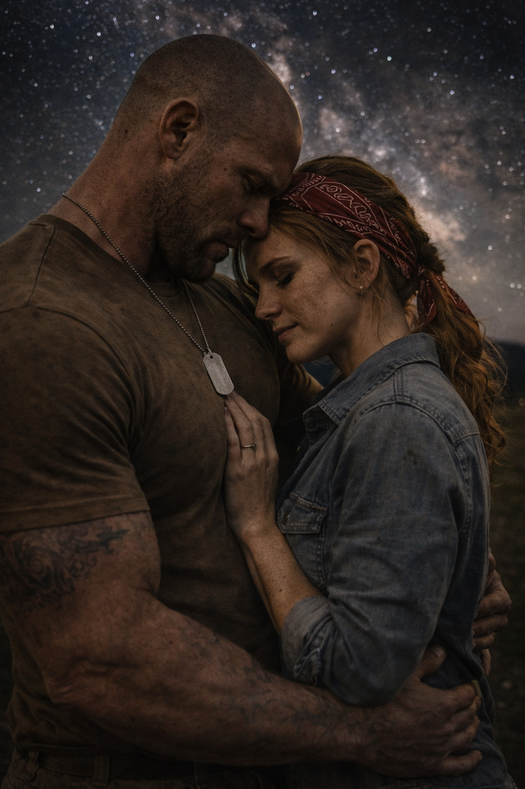
Before the tattoos covered his neck, before the dog tags became a permanent fixture on his chest, Grunt was just a man who loved the dirt. He grew up on a sprawling, multi-generational cattle ranch. He loved the quiet of the early morning, the smell of damp earth, and the immense, grounding presence of the livestock. His parents had worked the land for forty years, weathered but proud.
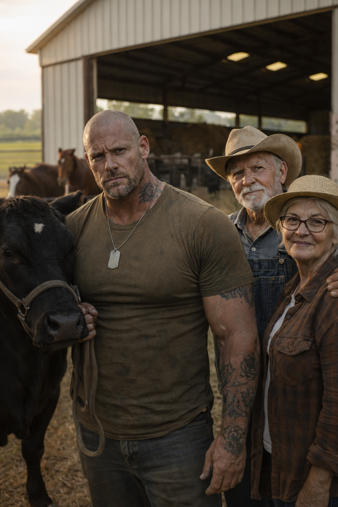
But soil and sweat don't pay the banks when the drought hits.
While Grunt was overseas, serving on brutal, grueling rotations as a Private Military Contractor, a Wall Street private equity firm sank its teeth into the rural heartland. A smug, aggressively ambitious Regional Director had engineered a new financial product: mezzanine debt disguised as agricultural relief. The loans were designed to fail. They featured ballooning, variable interest rates hidden behind impenetrable legal jargon.
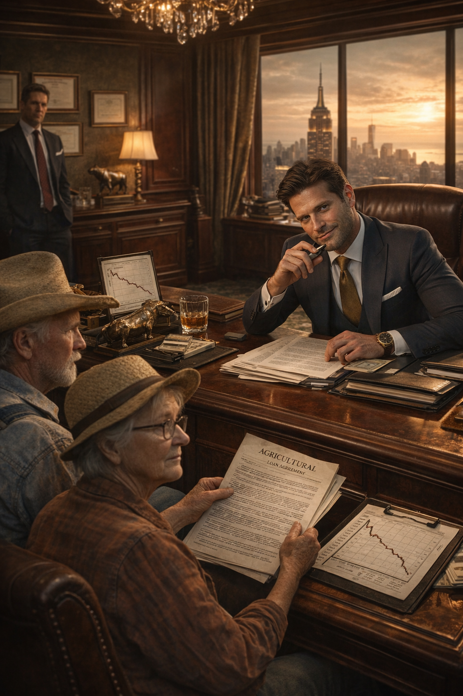
By the time Grunt's parents realized the interest payments had tripled, the firm had already initiated foreclosure proceedings. Wall Street didn't want the interest; they wanted the land to flip to a corporate agriculture conglomerate.
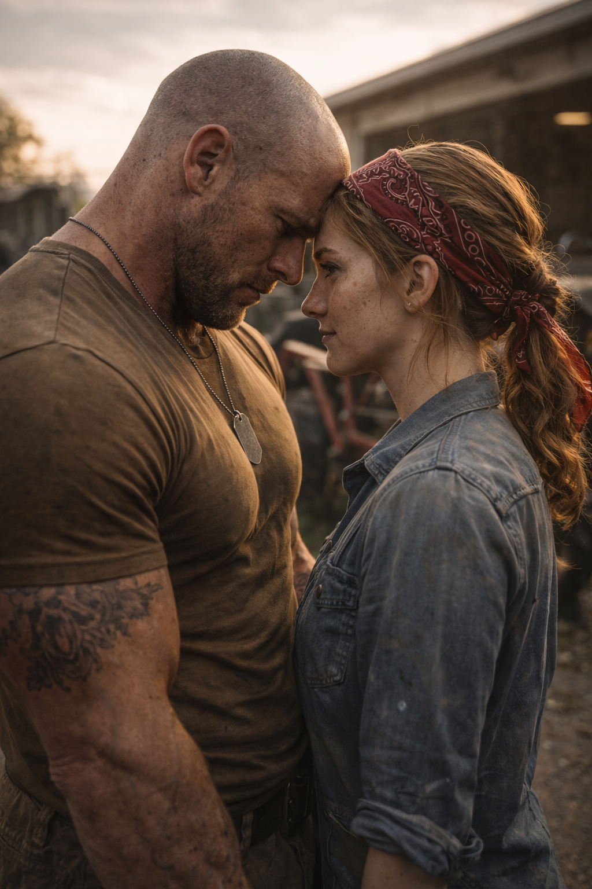
Despite the chaos of his deployments, Grunt had an anchor. Her name was Clara.
They had met as teenagers in the dust of the county fair. She was the local mechanic's daughter—sharp, quiet, and fiercely loyal. When Grunt shipped out, she stayed behind, writing him letters that smelled of motor oil and prairie rain. When his parents started struggling with the farm, Clara stepped in. She spent her weekends fixing their tractors, mending fences, and cooking dinners, keeping the ranch alive while Grunt was half a world away.
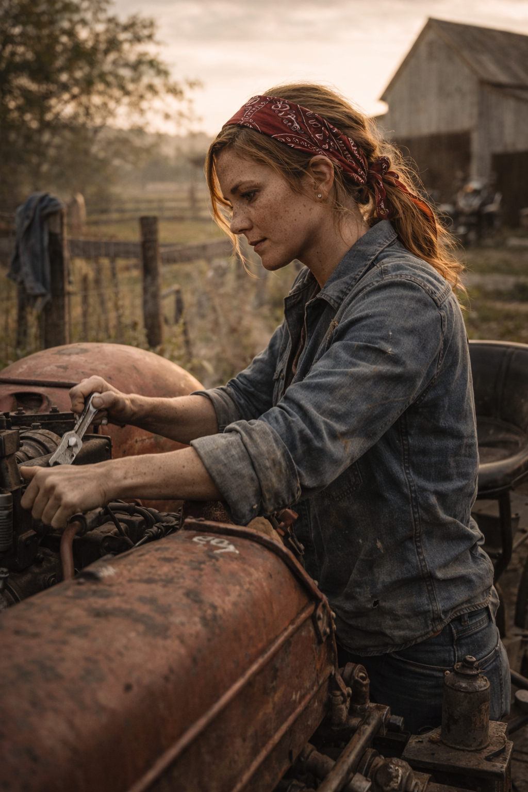
On his last leave, under the vast canopy of a star-filled sky, they made a promise. He told her this was his final rotation. She promised she would be waiting. "I am yours," she had whispered, leaning her head against his chest. "Whole and soul."
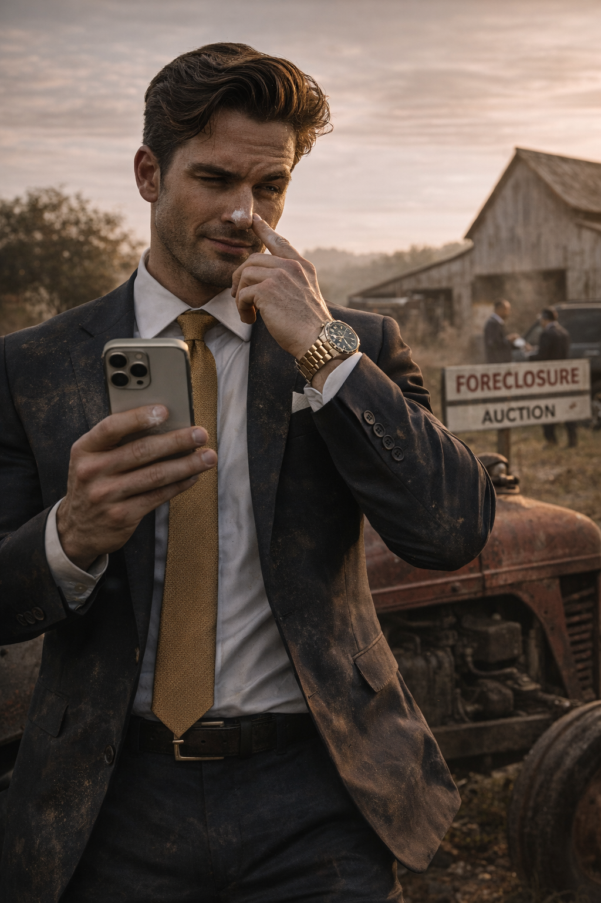
The tragedy began a week before Grunt's final return. The private equity firm sent a team to appraise the foreclosed ranch. Among them was a junior executive—a man with an inherited Rolex, a cocaine habit, and absolute contempt for the rural families his firm was displacing.
Clara was in the barn, packing away Grunt's childhood belongings for his parents, when the executive cornered her. The details of what happened in the dust of that barn were buried by expensive corporate lawyers, but the aftermath was undeniable. The executive attempted to assault her, leveraging his firm's total control over her surrogate family's livelihood to ensure her silence.
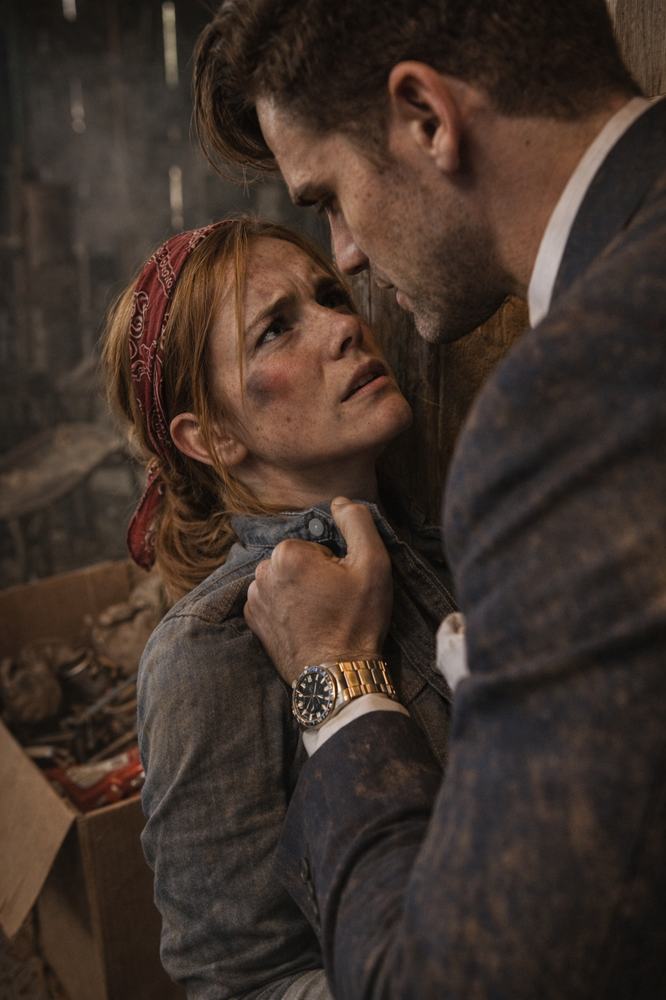
Clara fought him off, but the psychological damage was catastrophic. The profound shame, the violation of the space she loved, and the suffocating realization that these men could destroy everything they cared about broke her. Feeling tainted, she believed she could no longer keep her sacred promise to Grunt.
She couldn't bear the shame. Two days later, she took her own life.
She left a single, tear-stained note on Grunt's bed. "I promised I would be yours. Whole and soul. He tried to take that. I can't give you what's left. Forgive me."
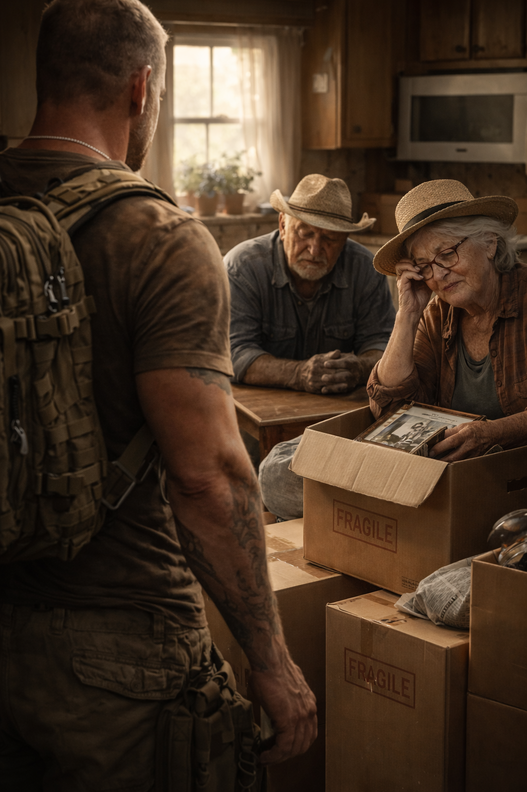
Grunt came home from his deployment to find moving boxes stacked in the farmhouse kitchen and a fresh grave in the county cemetery. His father wouldn't meet his eyes. His mother handed him Clara's note with trembling hands.
It was a tragedy that could have been handled in a courtroom. A class-action lawsuit was already brewing against the private equity firm. The SEC was secretly preparing indictments for predatory lending practices. The executive would have eventually faced justice. His parents begged him to let the law handle it.
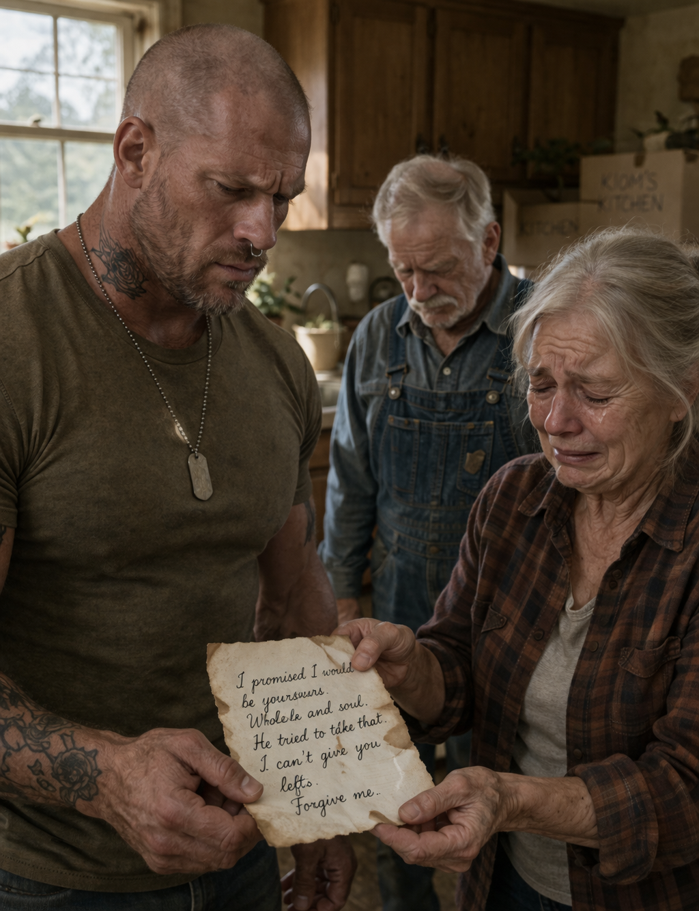
But Grunt didn't have the patience for the law. Not when Clara was in the ground.
He had three massive, highly trained guard dogs and muscles forged in combat zones. And he knew exactly where the Regional Director's office was.
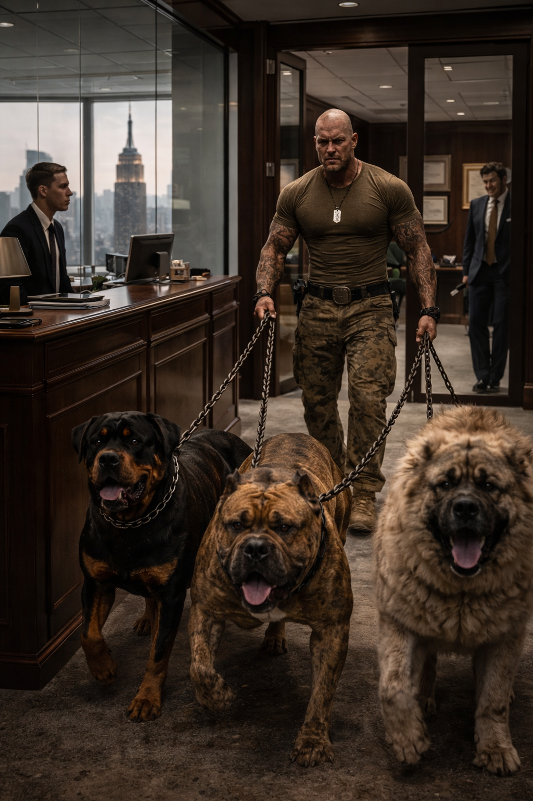
Grunt walked into the pristine, glass-walled Wall Street regional office wearing his combat boots and camo pants, his monstrous dogs leashed by heavy iron chains. He tied the dogs to the mahogany reception desk and walked straight into the executive suite.
He didn't use a weapon. He didn't have to. He was a weapon.
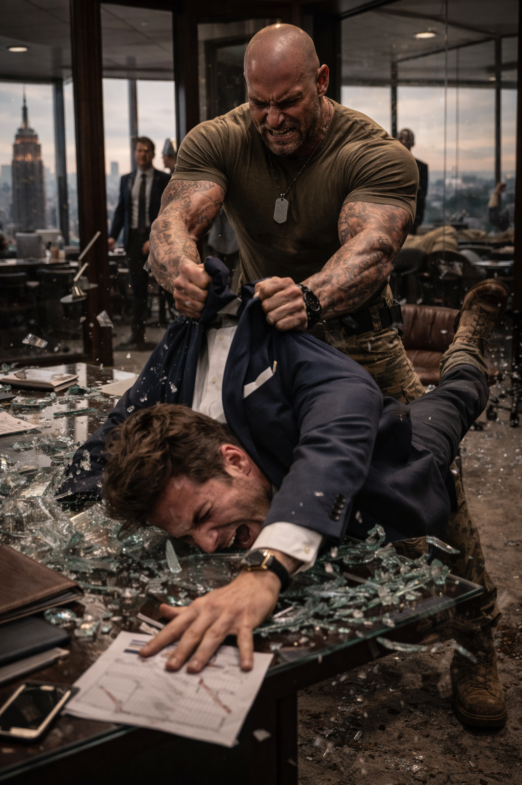
He tore through the firm's security like tissue paper. When he found the junior executive who had cornered Clara, he ripped the heavy oak doors off their hinges. He grabbed the screaming suit by his custom-tailored lapels and physically threw him through a reinforced glass conference table, methodically dismantling the man until the police arrived.
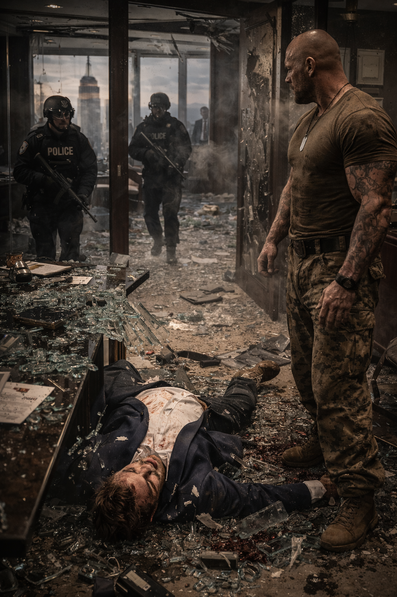
It wasn't a fight; it was an execution. The satisfaction lasted exactly five minutes. The consequences lasted a decade.
Because Grunt had committed a violent felony, his family was immediately disqualified from the class-action settlement. His parents lost everything permanently. Grunt caught a ten-year sentence for aggravated assault and attempted murder. He had traded his family's future for ten minutes of blood-soaked vengeance.
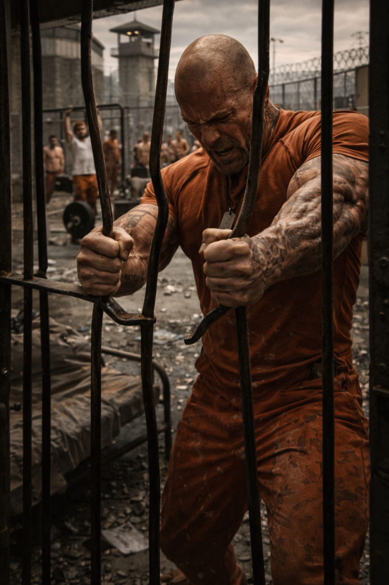
In maximum security, Grunt became an animal. The guilt of failing his parents and the lingering, burning grief over Clara consumed him, twisting into a dark, primal rage. He spent his days in the yard, ignoring the gangs and the politics, focusing entirely on turning his body into an unbreakable machine. He bent the iron bars of his cell just to see if he could. He was a beast locked in a cage of his own making.
The Brute Toolkit